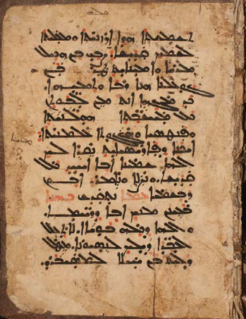

- Material: paper
- Date: approximately between 14-16th cent.
- Script type: Serto
- References: The images of this manuscript on vHMML
The pastedown in the binding of the Garshuni (Arabic) manuscript N. 70 from the collection of Zafaran monastery (ZFRN 00070) includes a fragment of a Syriac Anaphora, as it can be noticed clearly from the structure of the prayers. Preliminary tests could find that it is from the Anaphora of Julius of Rome, exactly from the liturgical section before the Lord’s Prayer.
Transcription:
ܬܫܡܫܬܐ ܗܕܐ ܐܪܙܢܝܬܐ ܘܡܥܠܝܬܐ ܠܫܡܟ ܩܕܝܫܐ. ܨܒܝ ܒܢ ܗܟܝܠ ܡܪܝܐ ܘܐܡܝܢܐܝܬ ܛܪ ܒܢ ܓܘܥܠܢܐ ܗܢܐ ܪܒܐ ܘܬܡܝܗܐ. ܟܕ ܡܓܗܐ ܐܢܬ ܡܢ ܠܒܘܬܢ ܟܠ ܡܚ̈ܫܒܬܐ ܗܘܠܢܝܬܵܐ. ܘܦܢܛܣܝܐ ܘܗܓܓܘܬܐ ܥܠܡܢܝܬܐ. ܐܝܟܢܐ ܕܦܐܪܝܣܝܐܝܬ ܢܩܪܐ ܠܟ ܐܠܗܐ ܫܡܝܢܐ. ܐܒܐ ܐܚܝܕ ܟܠ ܩܕܝܫܐ ܘܢܨܠܐ ܘܢܐܡܪ. ܐܒܘܢ ܕܒܫܡܝܐ ܥܡܐ ܢܬܩܕܫ ܟܗܢܐ ܒܥܝܢܢ ܡܝܟ ܐܒܐ ܕܪ̈ܚܡܐ. ܘܐܠܗܐ ܕܟܠܗ ܒܘܝܐܐ. ܠܐ ܬܥܠ ܠܥܒ̈ܕܐ ܕܝܠܟ ܠܢܣܝܘܢܐ ܡܛܠ ܕܠܝܬ ܒܢ ܚܝܠܐ ܠܡܣܝܒܪܘ.
Literature:
Ephrem Aboud Ishac, “Towards a Comprehensive Syriac Liturgical Corpus (Part I),” in Tracing Written Heritage in a Digital Age, ed. Ephrem Aboud Ishac, Thomas Csanády, and Theresa Zammit Lupi (Wiesbaden: Harrassowitz Verlag, 2021), 409.